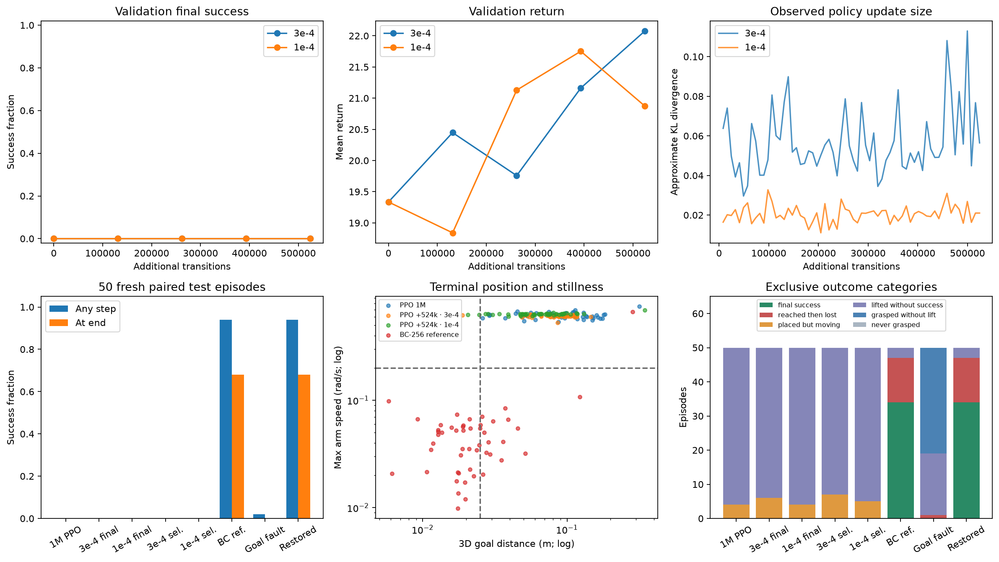

PHYSICAL AI FOUNDATIONS · STAGE 1 · CONTROLLED PPO CONTINUATION
Smaller updates.
The same placement test.
Two PPO runs start from identical policy, critic and Adam state. The sole
treatment is learning rate: 3e-4 versus 1e-4, each with 524,288 additional
environment transitions.
Keep the task fixed. Test complete behavior.
PickCube still requires 3D goal error ≤2.5 cm and
all seven arm speeds ≤0.2 rad/s. Episodes run all 50
steps. Training uses fresh validation seeds 60000–60009; the table uses
reserved test seeds 70000–70049.
| Policy |
Success at any step |
Success at end |
Final 95% interval |
Mean return |
| PPO 1M | 0/50 | 0/50 | 0.0–7.1% | 20.55 |
| PPO +524k · 3e-4 | 0/50 | 0/50 | 0.0–7.1% | 21.62 |
| PPO +524k · 1e-4 | 0/50 | 0/50 | 0.0–7.1% | 21.70 |
| 3e-4 · selected | 0/50 | 0/50 | 0.0–7.1% | 21.69 |
| 1e-4 · selected | 0/50 | 0/50 | 0.0–7.1% | 21.88 |
| BC-256 reference | 47/50 | 34/50 | 54.2–79.2% | 34.47 |
| BC · goal fault | 1/50 | 0/50 | 0.0–7.1% | 20.35 |
| BC · restored goal | 47/50 | 34/50 | 54.2–79.2% | 34.47 |
“Final” means the fixed-budget model. “Selected” means the best
validation model, including the starting checkpoint at zero added steps.
A selected starting model is not evidence of improvement from
continuation. The BC reference uses expert data and sits outside the
learning-rate comparison.
Update size, position error and stillness

The scatter plot uses log scales. Task success requires being left of
the vertical distance threshold and below the horizontal speed threshold
at the same time. Smaller KL describes optimization; success still
depends on physical behavior.
Predeclared paired native rollouts
The first two test seeds, shown for both final-budget PPO models and the
expert-data reference and the deliberate goal-input fault. Native simulation at 20 frames per second, with
failures retained.
PPO +524k · 3e-4 · seed 70000
Final success: False. Distance 0.086 m; max joint speed 0.617 rad/s.
PPO +524k · 1e-4 · seed 70000
Final success: False. Distance 0.081 m; max joint speed 0.622 rad/s.
BC-256 reference · seed 70000
Final success: True. Distance 0.025 m; max joint speed 0.038 rad/s.
BC · goal fault · seed 70000
Final success: False. Distance 0.298 m; max joint speed 0.064 rad/s.
PPO +524k · 3e-4 · seed 70001
Final success: False. Distance 0.056 m; max joint speed 0.634 rad/s.
PPO +524k · 1e-4 · seed 70001
Final success: False. Distance 0.051 m; max joint speed 0.636 rad/s.
BC-256 reference · seed 70001
Final success: False. Distance 0.037 m; max joint speed 0.085 rad/s.
BC · goal fault · seed 70001
Final success: False. Distance 0.145 m; max joint speed 0.084 rad/s.
Deliberately break and restore the observation contract
The goal-fault run replaces both goal encodings with “the goal is at the
current cube position.” The simulator's actual goal, reward and scoring
stay intact. The restored run disables that fault on the same clone
without retraining. Every restored episode must exactly reproduce the
clean reference, so this separates an input bug from a change to
physical dynamics.